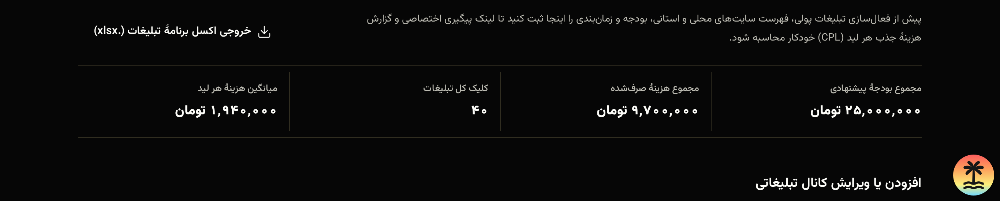
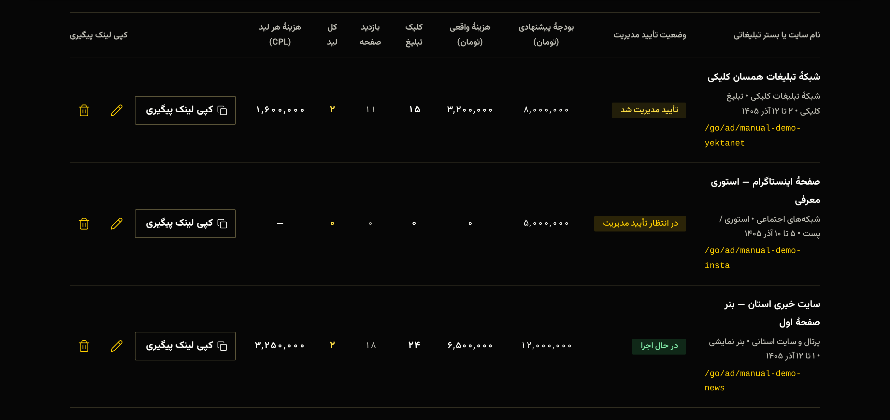
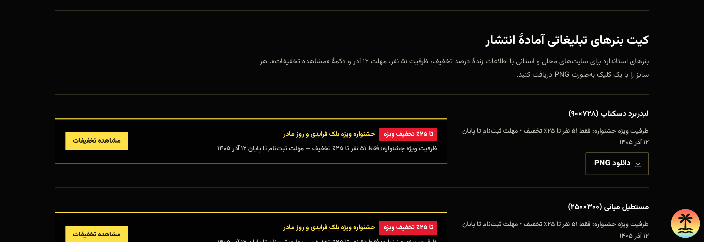

فصل۴
مدیریت تبلیغات، بودجه، لینکهای پیگیری و بنرها
ثبت کانال تبلیغاتی و فرایند تأیید مدیریت
پیش از فعالسازی تبلیغات پولی، فهرست سایتها و بسترهای پیشنهادی، بودجهٔ پیشبینیشده و زمانبندی اجرا را در زبانهٔ تبلیغات، بودجه و بنرها ثبت کنید تا برای تأیید مدیریت آماده شود.

- در نوار بالایی ۱، مجموع مجموع بودجهٔ پیشنهادی، مجموع هزینهٔ صرفشده، کلیک کل تبلیغات و میانگین هزینهٔ هر لید بهصورت زنده محاسبه میشود.
- برای دریافت جدول تأیید مدیریت و گزارش CPL در اکسل، روی خروجی اکسل برنامهٔ تبلیغات (.xlsx) ۲ بزنید.
- در فرم پایین، نام سایت یا بستر تبلیغاتی ۳ (مثلاً «سایت خبری استان — بنر صفحهٔ اول») و کد پیگیری (UTM) ۴ را با حروف انگلیسی و بدون فاصله (مثلاً
provincial-news-top) وارد کنید. - نوع بستر، نوع جایگاه، بودجهٔ پیشنهادی (تومان) ۵، هزینهٔ واقعی (تومان) ۶، زمانبندی اجرا و وضعیت تأیید مدیریت ۷ را مشخص کنید.
- روی ذخیرهٔ کانال تبلیغاتی ۸ بزنید.
نکتهٔ کلیدی
| وضعیت | کاربرد |
|---|---|
| پیشنویس | طرح اولیه در حال بررسی است و هنوز به مدیریت ارائه نشده است. |
| در انتظار تأیید مدیریت | پیشنهاد سایت، بودجه و زمانبندی ثبت شده و منتظر تأیید مدیریت کلینیک است. |
| تأیید مدیریت شد | بودجه و زمانبندی تأیید شده و کانال آمادهٔ ارسال بنر و لینک به رسانه است. |
| در حال اجرا | تبلیغ فعال است و کلیکها، بازدیدها و لیدهای ورودی بهصورت زنده ثبت میشوند. |
| متوقف | انتشار تبلیغ بهطور موقت متوقف شده است (مثلاً به دلیل CPL بالا). |
| پایانیافته | بازهٔ قرارداد تبلیغاتی تمام شده و گزارش نهایی آن برای ارزیابی حفظ میشود. |
کپی لینک پیگیری و محاسبهٔ هزینهٔ جذب هر لید (CPL)

- در ردیف هر کانال ۱، نشانی کوتاه اختصاصی به شکل
/go/ad/<code>ساخته میشود. - روی کپی لینک پیگیری ۲ بزنید و همین لینک را به سایت خبری، شبکهٔ تبلیغاتی یا ادمین پیج بدهید تا روی بنر قرار دهد.
- پس از پرداخت هزینهٔ تبلیغ (یا در پایان هر هفته)، روی دکمهٔ مداد ویرایش ۳ بزنید، مبلغ دقیق هزینهٔ واقعی (تومان) را بهروز کنید و ذخیره بزنید؛ ستون هزینهٔ هر لید (CPL) ۴ بلافاصله از تقسیم هزینهٔ واقعی بر تعداد لیدهای آن کانال محاسبه میشود.
نکتهٔ کلیدی
دانلود بنرهای تبلیغاتی آمادهٔ انتشار
در بخش پایینی همین زبانه، کیت آمادهٔ بنرهای فارسی جشنواره قرار دارد. تمام بنرها شامل پنج مورد الزامی (عنوان «جشنواره بلک فرایدی و روز مادر»، بیشینهٔ درصد تخفیف زنده، ظرفیت محدود ۵۱ نفر، مهلت ثبتنام تا ۱۲ آذر و دکمهٔ «مشاهده تخفیفات») هستند.

- سایز موردنیاز رسانه را از میان چهار قالب استاندارد پیدا کنید: - لیدربرد دسکتاپ (۷۲۸×۹۰) برای بالای صفحههای خبری دسکتاپ. - مستطیل میانی (۳۰۰×۲۵۰) برای ستون کناری و میان خبرها. - بنر موبایل (۳۲۰×۱۰۰) برای نمای موبایل سایتهای استانی. - مربع شبکههای اجتماعی (۱۰۸۰×۱۰۸۰) برای پست شبکههای اجتماعی و رپورتاژ.
- روی دانلود PNG ۱ بزنید تا تصویر باکیفیت و آمادهٔ ارسال ذخیره شود.
نکتهٔ کلیدی
رفع مشکل
| آنچه میبینید | چه باید کرد |
|---|---|
| پیام کد پیگیری باید با حروف یا اعداد انگلیسی و بدون فاصله باشد (مثلاً isfahan-news). | کد پیگیری را فقط با حروف کوچک انگلیسی، عدد و خط تیره بنویسید و از حروف فارسی یا فاصله استفاده نکنید. |
| پیام کانال تبلیغاتی با این کد پیگیری قبلاً ثبت شده است. | برای هر رسانه یا جایگاه تبلیغاتی یک کد یکتا انتخاب کنید (مثلاً -top و -sidebar را به انتهای کد اضافه کنید). |
ستون هزینهٔ هر لید (CPL) خط تیره (—) نشان میدهد. | یا هنوز مبلغی در هزینهٔ واقعی (تومان) ثبت نشده یا هنوز لیدی از آن کانال وارد نشده است. پس از ثبت هزینه و دریافت نخستین لید، عدد CPL نمایش داده میشود. |
| کلیکهای یک رسانه ثبت میشود ولی لیدها به نام آن نمیخورد. | مطمئن شوید رسانه دقیقاً لینک کپیشده از کپی لینک پیگیری را بدون حذف کردن بخش /go/ad/... روی بنر قرار داده باشد. |